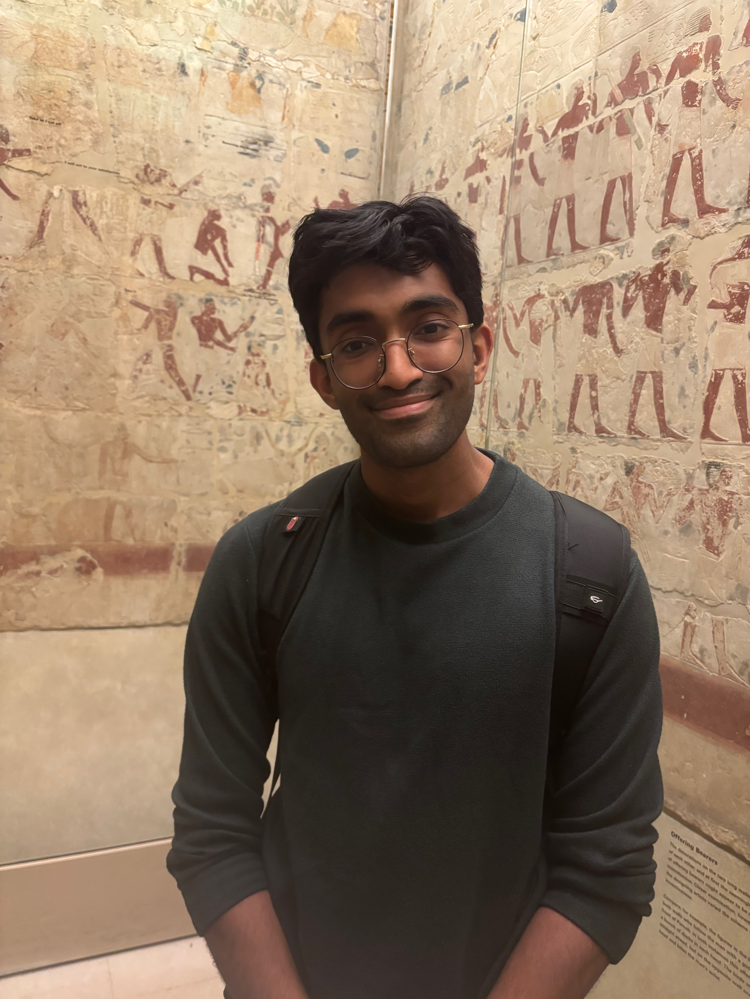

Second year PhD student at Cornell University, advised by Prof. Tanya Goyal. Gratefully supported by an NSF GRFP Fellowship. My research focuses on knowledge in language models — how they store it, how we can edit it, and how we can make them more reliable and factual.

Language models are increasingly used as substitutes for search, yet they remain static snapshots of their training data and are prone to hallucination. How can we make them reliably incorporate new information while preserving what they already know?
Language models typically present anything they say with high confidence, regardless of whether they are right or wrong. However, they do seem to maintain some representation internally of their confidence. How can we calibrate them such that their internal confidence is reflected verbally?
We have very little understanding how LMs work. Although I love reading theory and interpretability papers, as an empiricist at heart I'm most motivated by empirically grounded work - e.g., physics of LMs, scaling laws, etc.
Currently a second-year PhD student at Cornell University, I work under the guidance of Prof. Tanya Goyal on problems at the core of natural language processing. My research revolves around knowledge in language models — how they store it, how we can edit it, and how we can calibrate them to be more reliable and factual.
I'm also deeply motivated by empirically grounded research that helps us understand language models better — scaling laws, physics of LMs, and the broader science of deep learning.
I obtained my undergraduate degree at UT Austin, where I was first introduced to NLP. I was fortunate to work with Prof. Eunsol Choi, Prof. Greg Durrett, and Prof. Richard Tsai.
In my free time, I'm passionate about learning languages. Through a small amount of "supervised training" (Duolingo) and a large amount of "unsupervised training" (native media), I've become a fluent speaker of Spanish, and I'm currently learning French and Tamil as well.
I also enjoy ultimate frisbee and calisthenics. I played for UT's ultimate frisbee team as an undergrad, and can currently do a pull-up with 100 lbs of additional weight.
Open to collaborations and conversations about research. Also happy to chat with any high schooler/undergrad/MS student if I can be of help in any way (e.g, advice about attending grad school).